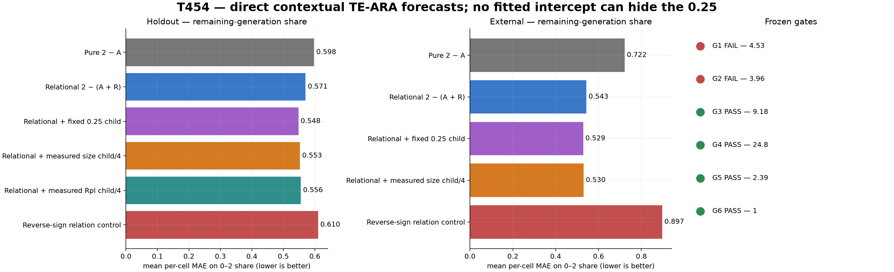
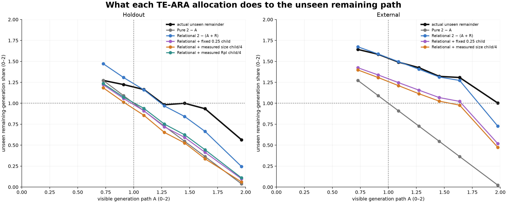
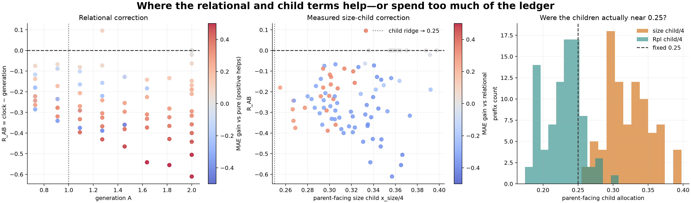
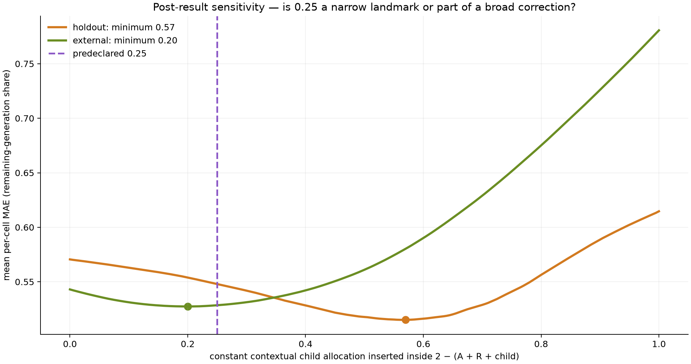
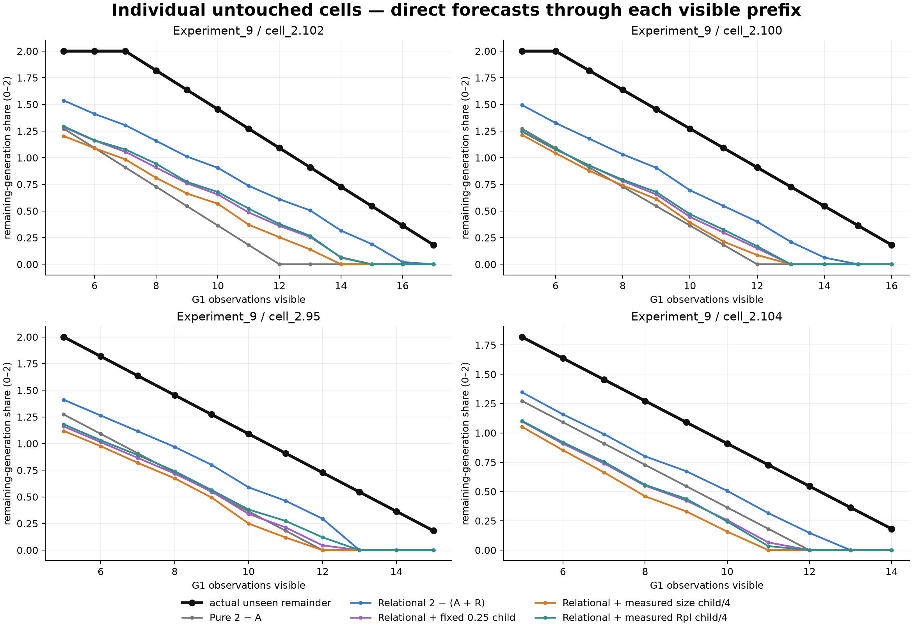

ARA test T454 · frozen direct geometry
The contextual TE-ARA path is more accurate than the pure complement
Your correction works in the predicted direction. Adding the measured generation/clock relation to the fixed total-2 ledger improves the unseen remaining path on both holdouts. Adding the predeclared 0.25 child improves it again—but the relational term is the strong result, while the exact child amount remains a gradient rather than a locked universal landmark.
Answer first
Exact reading: 2 − (A + R_AB + 0.25) is more accurate than 2 − A on both held-out groups. However, most of the transferable improvement comes from R_AB = clock − generation. The 0.25 term supplies a smaller correction whose independent bootstrap interval crosses zero.
1. What was tested
No formula was fitted. The same direct allocation was applied to every legal prefix:
Pure: \(2-A\)
Relational: \(2-(A+R_{AB})\)
Contextual child: \(2-(A+R_{AB}+C)\), with \(C=0.25\), size-child/4, or Rpl-child/4.
Because A + R_AB = clock, the relational construction explicitly restores the disagreement between biological generation progress and elapsed clock progress. The reverse-sign control tests whether the direction matters.

Lower bars are better. Four of six frozen gates pass. The two misses are close: 4.53% against a 5% relational threshold, and 3.96% against a 5% child-over-relation threshold.
2. The path geometry

Black is the unseen answer. Grey is the pure complement. Blue restores the generation/clock asymmetry. Purple and orange spend another child share from the remaining ledger. The external panel shows the cleanest result: pure closure falls far too quickly, while the relational path follows the observed remainder closely until the clipped endpoint.
Experiment 9
| formula | mean per-cell MAE | RMSE | bias |
|---|---|---|---|
| Pure 2 − A | 0.598 | 0.630 | -0.339 |
| Relational 2 − (A + R) | 0.571 | 0.504 | -0.107 |
| Relational + fixed 0.25 | 0.548 | 0.582 | -0.322 |
| Relational + size child/4 | 0.553 | 0.618 | -0.371 |
| Relational + Rpl child/4 | 0.556 | 0.578 | -0.302 |
| Reverse-sign control | 0.610 | 0.760 | -0.511 |
Experiments 1–6
| formula | mean per-cell MAE | RMSE | bias |
|---|---|---|---|
| Pure 2 − A | 0.722 | 1.032 | -0.814 |
| Relational 2 − (A + R) | 0.543 | 0.601 | -0.145 |
| Relational + fixed 0.25 | 0.529 | 0.683 | -0.373 |
| Relational + size child/4 | 0.530 | 0.705 | -0.414 |
| Reverse-sign control | 0.897 | 1.248 | -1.067 |
Whole-cell uncertainty: external relational MAE gain over pure is 0.179, 95% bootstrap interval [0.092, 0.262]. The same-platform gain is 0.027, interval [-0.104, 0.150], reflecting only twelve cells.
3. What happened to the 0.25 child?

Red points indicate where a term helps; blue where it overspends the ledger. The measured size child sits around 0.321; Rpl13A around 0.233. Rpl13A is therefore naturally near the proposed grandchild ridge of 0.25, while size is usually larger.
The fixed 0.25 was the best of the frozen child formulas in Experiment 9. It improves the relational generation forecast by 3.96%, and the complete contextual formula improves the clock target by 9.2% versus pure. Externally, fixed 0.25 improves generation by 26.8% versus pure, but only a small amount beyond the relation itself.

Post-result diagnostic only: the large external sample has a broad minimum around 0.20, close to 0.25. The small holdout minimum is around 0.57. Therefore 0.25 is compatible with the external shape but is not uniquely identified across datasets.
4. Individual cells

These show why the aggregate child result is a gradient. A single offset can improve the centre of many paths while overspending the ledger for particular long-lived cells.
5. ARA verdict
Observed: 4.53
Observed: 3.96
Observed: 9.18
Observed: 24.8
Observed: 2.39
Observed: 1
Supported: for this lifespan cut, contextual allocation is more faithful than treating the identity as an isolated pure pair. The sign of the relation is not arbitrary: reversing it is worse in both holdouts, dramatically so in the 119-cell transfer.
Not yet supported: a universal exact 0.25 internal child, a completed four-dimensional sphere, or Time itself. The relational correction largely says that generation progress alone is not the whole identity; elapsed clock progress is a separately informative coupled cut.
Best next step: freeze the relational formula and estimate the child share from an independently observed internal process—without using the future outcome. That directly tests whether the child term is a real allocation rather than a useful constant bias correction.
Traceability
The frozen protocol, direct forecast ledger, bounded and unbounded scores, whole-cell bootstraps, sensitivity table and all figures are stored beside this report.